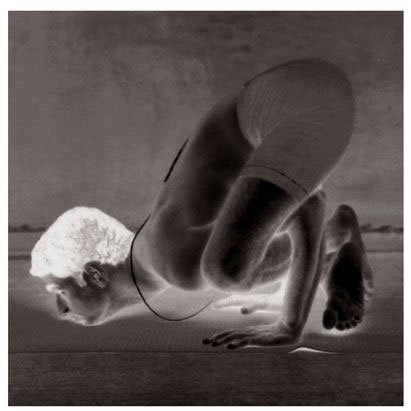

There are eight types of Marichyasana. The first four are related to yoga chikitsa [yoga therapy], and I will describe only these four here. Marichyasana was discovered by the sage Maricha, who gave it its name. The first and second forms of the asana (A & B) have twenty-two vinyasas, and the third and fourth (C & D) have eighteen vinyasas each. The states of Marichyasana (A) and (B), respectively, are the 8th and 15th vinyasas, and of Marichyasana (C) and (D), the 7th and 12th vinyasas. The methods for the vinyasas and for rechaka and puraka have been specified in earlier asanas.
METHOD
To begin, stretch the left leg out as for the 7th vinyasa of Paschimattanasana, bend the right knee up, pulling the right heel in toward the right buttock, take the right arm around the knee of the bent leg, bring the left hand behind the back and take hold of the right wrist, stretch the left leg, raise the chest, and do puraka slowly; this is the 7th vinyasa. Then, doing rechaka slowly, place the forehead or chin on the knee of the outstretched leg, keeping the outstretched leg straight and tight, and doing puraka and rechaka as much as possible; this constitutes the 8th vinyasa (see figure). Next, doing puraka, lift the head up; this is the 9th vinyasa. Then, Uth Pluthi is the 10th vinyasa. Practice in this way for both the right and left sides.
BHUJAPIDASANA, 8TH VINYASA
